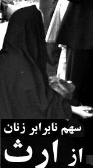

پذيرش > تریبون > تشکبل کارگروه «ارث برابر» : قدم به قدم برای تغییر قوانین به نفع زنان
 در روند شکل گیری کارگروه های تخصصی درکمپین در روند شکل گیری کارگروه های تخصصی درکمپین

 تشکبل کارگروه «ارث برابر» : قدم به قدم برای تغییر قوانین به نفع زنان تشکبل کارگروه «ارث برابر» : قدم به قدم برای تغییر قوانین به نفع زنان
18 مهر 1387 - خدیجه مقدم - نسخه قابل چاپ
تغییر برابر برابری: تشکیل کارگروه های گوناگون درکمپین تهران و در مناطق کشور مدت هاست که در روند کار و برحسب نیاز حین عمل در کمپین دنبال می شود. ویژگی اصلی کارگروه های کمپین ’باز بودن" آن هاست، به این معنا که هیچ محدودیتی برای عضویت اعضا در آن ها وجود ندارد و همه افراد می توانند در صورت تمایل وارد کارگروه شده یا از آن خارج شوند و درباره شکل و روش کار در آن پیشنهاد بدهند. عامل اصلی مرتبط کننده افراد در کارگروه ها وجود یک ظرف مشترک یعنی یک پروژه کاری یا پژوهشی مشترک است و افراد بر اساس توانایی ها و علایقشان حول یک محور مشترک با هم کار می کنند. هر فعال کمپین یا عضو کمیته ای می تواند کارگروهی را پیشنهاد دهد یا در کارگروه های مختلفی فعال شود. وجود همکاری و همفکری بین کمیته ها و کارگروه ها مانع بسته شدن فضای زنده و پویای کمپین می شود. در عین حال توانمند سازی به شکل تخصصی ترو ایجاد ارتباطات شبکه ای گسترده تربرای اعضا را ممکن می کند.
این کارگروه ها ابتدا با بزرگ شدن کمپین برای تسهیل فعالیت های اجرایی آغاز به کار کردند. به طور مثال رسانه تغییر برای برابری کارگروه های مختلف را برای سامان دادن به فعالیت هایش تشکیل داد .برخی از این کارگروه ها چون کارگروه هنر از رسانه جدا و به طور مستقل فعالیت کمیته ای ترتیب داد و اکنون دارای کارگروه های مستقلی چون تئاترخیابانی، نقد فیلم و عکس و مصاحبه با هنرمندان ...حول بحث ها و موضوع های گوناگون در کمپین است که الزاما محدود به تهران نیست. حتی اکنون کار گروه هایی چون فتو چنج و پادکست نیز مستقل از رسانه و کمیته هنری فعالیت می کنند. یعنی بدین ترتیب با گسترش فعالیت کمپین بر تعداد کارگروه های آن نیز افزوده می شود. شرط ماندگاری و پوبایی این کارگروه ها در کمپین ارتباط گسترده و مداوم آنها با یکدیگراست.
تمرکز مشخص بر هر یک از موارد مطرح در بیانیه کمپین ضرورت شکل گیری کارگروه های مختلف دیگری را نیز مطرح ساخت این کار هم می توانست ازیک سو از هرز نیروها جلوگیری کند و از سوی دیگر به فعالیت ها متناسب با علائق اعضای کمپین جهت دهد. بدین ترتیب کار گروه هایی دیگری حول محورهای مطرح در بیانیه شکل گرفتند تا با تمرکز بر هر یک از مطالبات مطرح در کمپین کارهای عملی و اجرایی و پژوهشی در این زمینه را در پیش بگیرند. تمرکز بر یکی از بندهای کمپین یعنی حذف ماده قانونی تعدد زوجات بسیاری از فعالیت های کمیته ها به ویژه رسانه، روابط عمومی و آموزش و مادران و هنری را متوجه خود کرد و برگزاری نشست های اعتراضی و انتشار مقالات گوناگون و حتی لابی با گروه های مختلف را موجب شد که حاصل بخشی از این فعالیت ها در اقداماتی که برای لایحه خانواده شد انعکاس یافت. کارگروهی هم برای انتشار کاری مکتوب دراین عرصه شکل گرفت که در این کار گروه فعالان مختلف کمپین چه در داخل کمیته ها و چه خارج از آن ها شرکت داشتند و حاصل آن مجموعه مقالاتچند همسری بود.
در این روند، و به ویژه بعد از تجربه لایحه حمایت خانواده و ضرورت افزایش کارگروه های تخصصی بر روی مطالبات عمومی شده، بسیاری از فعالان کمپین در تهران و شهرستان ها در تلاش اند که در سومین سال فعالیت کمپین با فعالیت متمرکز بر هر یک از بند های بیانیه کارگروه هایی را در این زمینه شکل دهند. در همین روند هم اکنون کارگروه های دیگری با موضوع سن کیفری، قتلهای ناموسی و طلاق – از مطالبات مطرح در بیانیه کمپین - در حال شکل گیری و جذب نیرو هستند.
از میان کارگروه های در حال شکل گیری کار گروه "ارث برابر" حدود یک ماه است که فعالیت اش را آغاز کرده است. در این باره توضیحات خدیجه مقدم را درباره کار گروه "ارث برابر" می خوانید:
تشکیل کارگروه " ارث برابر" کمپین یک میلیون امضاء: قدم به قدم برای تغییر قوانین به نفع زنان خدیجه مقدم
اگر نگاهی به قانون مدنی – قانون گذرنامه – قانون مجازات اسلامی و قانون آیین دادرسی کیفری و بند های مربوط به زنان بیاندازیم زن ستیزی قانون گذاران را به وضوح و روشنی می بینیم که البته این قوانین در چهارچوب قانون اساسی نوشته شده که در آن زن به عنوان انسان کامل و مستقل دیده نشده و تنها وقتی مادر یا همسر است به رسمیت شناخته شده است.
در قوانین مذکور جایی که زن باید مجازات شود حتی در سنین کودکی ، عاقل و بالغ و کامل است و جایی که حقی به اوباید تعلق گیرد ناقص و نابالغ است . نه حق ازدواج دارد نه طلاق و شهادت و سرپرستی و نه حق ارث و دیه برابر.
همان طور که در دفترچه " تاثیر قوانین تبعیض آمیز بر زندگی زنان " به استناد قوانین موجود آمده است ارث دختر نصف پسر است .
و ارث زن به عنوان همسر یک هشتم از اعیانی و اموال منقول، از زمین هم هیچگاه ارث نمی برد.
جالب این جاست که اگر زنی فوت کند و هیچ وارثی جز همسرش نداشته باشد تمام اموالش به شوهرش تعلق می گیرد و اگر عکس آن اتفاق بیافتد ، یعنی اگر مردی فوت کند که وارثی جز همسرش نداشته باشد یک چهارم به زن و سه چهارم به دولت می رسد که با هیچ منطقی این حق ارث پذیرفتنی نیست .
قانون نابرابر و تبعیض آمیز ارث ، زنان را در سال های پایانی زندگی شان که به مراقبت بیشتری نیازمندند بیش از پیش محروم و فقیر می کند . بخصوص در روستا ها که زن ، سال های سال در زمین زراعی همسرش جوانی خود را هزینه کرده و هنگام پیری حتی یک وجب از آن زمین به او ارث نمی رسد . و یک هشتم اموال منقول و اعیانی خانه ای روستایی رقمی نیست که حتی به حساب آید .
ارث نادعالانه بعد از زلزله فاجعه بار بم بیشتر عیان شد ، زنانی که شوهرانشان در اثر زلزله کشته شده و خانه هایشان ویران شده بود هیچ گونه ارثی هم از زمین نمی بردند کم کم متوجه فاجعه قانون ارث بعد از فاجعه زلزله شدند .تغییر ماده قانونی مربوط به ارث از جمله خواسته های مطرح شده در بیانیه کمپین هم هست که کنشگران کمپین در گفت و گوی رو در رو با زنان ، بسیار با آن مواجه بوده اند .
دو سال پیش وقتی کمپین یک میلیون امضاء آغاز به کار کرد و تبعیض های قانونی در مورد حقوق زنان مطرح شد بسیاری از زنان که با پوست و گوشت خود این نابرابری ها را لمس کرده بودند و تاثیر این قوانین را در زندگی خود شاهد بودند گروه گروه به کمپین پیوستند و خواسته های خود را با صدای بلند برای مردم و مسئولان بازگو کردند تا جایی که امروز بسیاری از مردم درتهران و سایر شهر های ایران و حتی در روستا ها می دانند که زنان ایران حتی اگر دو برابر مرد خانواده هم کار و تلاش کنند ،نصف یک انسان کامل محسوب می شوندو برای تغییر این قوانین است که زنان در سال های اخیر هزینه های زیادی را متحمل شده اند
.
و به مدد رسانه های ارتباطی قوی این دوران در مدت دوسالی که از فعالیت کمپین می گذرد به واقع بحث حقوق زنان به طور حیرت آوری عمومی شده است .
از همین رو به نظر می رسد می توان در سومین سال فعالیت کمپین به صورت تخصصی روی هر یک قوانین تبعیض آمیز متمرکز شد ، کارگروهی را تشکیل داد و هر کدام از قوانین مورد نظر را مورد مطالعه و بررسی قرار داد و تلاش کرد تا قدم به قدم قوانین به نفع زنان تغییر پیدا کند.
تشکیل کار گروه های تخصصی می تواند:
 موجب متکثر شدن کمپین شود . موجب متکثر شدن کمپین شود .
تعداد بیشتری از مردم را به کمپین جذب کند .
با مطالعه و تحقیق در مورد هر کدام از قوانین موجب افزایش آگاهی های عمومی مردم شود .
هر کمیته ای تا هر زمان که نیاز کمپین و اعضاء باشد به کار خود ادامه دهد.
تعداد اعضا کمیته ها را کمتر و امکان برگزاری نشست ها را بیشتر کند .
خواسته های مشخص و کوچک تر موجب تغییر سریع تر یک یک قوانین شود .
و در پایان تعداد امضا ها را افزایش دهد .
به همین منظورمن با تعدادی از اعضاء جدید کمپین که موضوع ارث نابرابر برای شان اهمیت ویزه ای داشت از اول مهر ماه 1387 کار گروهی تشکیل داده ایم که در راستای اهداف کمپین و با همان روش آموزش چهره به چهره و جمع آوری امضاء فعالیت می کند و از همه شیوه ها از پایین – ارتباط با مردم و جلب مشارکت آنان واز بالا- لابی با نمایندگان مجلس و مسئولان حکومتی ، فقها ، علما و حقوقدان ها برای تغییر قانون ارث تلاش خواهد کرد.
به نظر اعضاء کار گروه " ارث برابر" کارگروه های دیگری چون " قتل های ناموسی" "حق طلاق"، " سن کیفری " و غیره با مشارکت اعضاء جدید و علاقه مند می تواند جنبش کمپین یک میلیون امضاء را بیش از پیش تقویت کند.
ارسال به
بالاترین
،
توییتر
،
فریندفید
،
فیسبوک
در همين بخش :
 دهمین دورۀ مراسم تندیس صدیقه دولت آبادی ۱۳۹۲ دهمین دورۀ مراسم تندیس صدیقه دولت آبادی ۱۳۹۲
کارت پستالهایی به بهانهی هشت مارس و به یاد همهی مبارزین راه برابری
بیانیه بیش از 350 تن از مدافعان حقوق زنان به مناسبت روز جهانی زن؛ زنان هر روز فرودستتر میشوند
لباسی که برای تن ما دوخته اند! /اعظم بهرامی
چالشها و چشمانداز فعالیت مدنی زنان
ديگر بخش ها :
طرح یک میلیون امضا
|
مقالات
|
سایت نوشته ها
|
اخبار
|
گزارش كمپين
|
گفت و گو
|
علیه سکوت
|
كوچه به كوچه
|
نامه های شما
|
گزارش ویژه
|
گفتگو با اعضا
|
ویژه سالگرد کمپین
|
تصویر برابری
|
دل آرام علی
|
تریبون
|
مقالات
|
تاریخ شفاهی
|
خارج از چارچوب
|
کتابخانه
|
درباره کمپین
|
کمپین در شهرها
|
کمپین در بند
|
صدای تغییر
|
ویژه 22 خرداد
|
لایحه حمایت از خانواده
|
گالری
|
عشا مومنی
|
امیر یعقوبعلی
|
خدیجه مقدم
|
راحله عسگری زاده و نسیم خسروی
|
پروین اردلان،جلوه جواهری، مریم حسین خواه، ناهید کشاورز
|
زینب پیغمبرزاده
|
سعیده امین، سارا ایمانیان، محبوبه حسین زاده، ناهید کشاورز و همایون نامی
|
احترام شادفر
|
نسیم سرابندی زاده،فاطمه دهدشتی
|
وبلاگ مهمان
|
پرونده خرم آباد
|
دستگیری ها
|
مریم مالک
|
پرستو اللهیاری
|
مهرنوش اعتمادی
|
سمیه رشیدی
|
Other Languages
|
همراهان
|
«فراخوان کمپین ده روز با بهاره هدایت»
| English
|